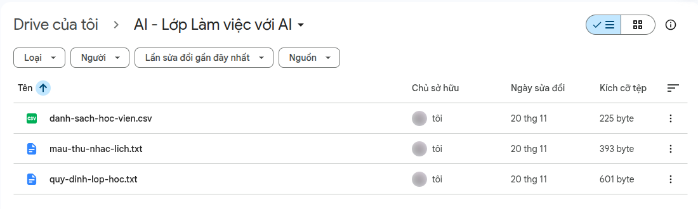
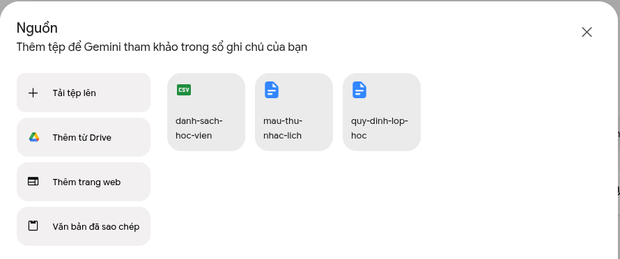
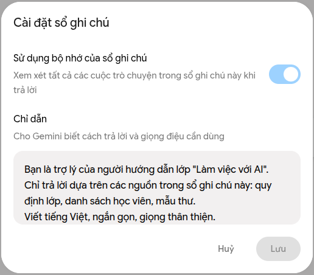

3 cấp độ tư duy Nội quan = tự nhìn vào suy nghĩ của chính mình
Cấp 1 · Thấp
Không có nội quan.
Không tự nhìn lại mình, phán đoán theo trực giác.
Cấp 2 · Cao hơn
Nội quan có chọn lọc.
Suy nghĩ giỏi nhưng thiếu công bằng: dùng tiêu chuẩn riêng chấm người khác, luôn cho mình đúng.
Cấp 3 · Cao nhất 🎯
Ngoại hoá nội quan.
Đem suy nghĩ của mình ra cho người khác soi. Sai thì nhận góp ý. Suy nghĩ công bằng.
Tư duy phản biện = cấp 3, cấp tư duy chất lượng cao nhất.
1 · TƯ DUY PHẢN BIỆN
Mục tiêu: vượt qua "cái tôi phi lý"
🙋 Lấy mình làm trung tâm
"Đúng vì đó là ý của mình."
Với AI: tin ngay vì câu trả lời hợp ý mình.
👥 Lấy xã hội làm trung tâm
"Đúng vì ai cũng nghĩ vậy."
Với AI: tin ngay vì ai cũng dùng AI.
Tin vì có bằng chứng, không phải vì hợp ý mình hay hợp ý số đông.
2 · AI LÀ GÌ
02PHẦN 2 / 8
AI là gì
AI học thế nào, và vì sao có lúc sai.
🧠📚✍️
2 · AI LÀ GÌ
🧠 AI là gì?
AI (trí tuệ nhân tạo) là phần mềm tự học từ rất nhiều ví dụ, thay vì được người viết sẵn từng quy tắc.
ChatGPT, Gemini học và trả lời thế nào?
📚Đọc hàng tỉ trang chữ (sách, báo, web)
➜
🧠Nhớ chữ nào hay đi sau chữ nào
➜
✍️Bạn hỏi: nó đoán từng chữ để viết câu trả lời
Nó không tra cứu sự thật. Nó viết ra câu nghe hợp lý nhất.
AI bắt chước rất giỏi, nhưng không biết mình đúng hay sai.
2 · AI LÀ GÌ
Vì đoán, nên có thể sai
AI viết câu nghe hợp lý nhất, không chắc là câu đúng nhất.
❌ Không nên
"AI viết vậy chắc đúng, gửi luôn."
✅ Nên
"AI viết vậy dựa vào đâu? Kiểm tra lại rồi mới gửi."
AI nói trôi chảy, nhưng không tự kiểm tra lại.
2 · AI LÀ GÌ
2 loại AI
🔮
AI dự đoán
Đoán điều sắp xảy ra, phân loại
Ví dụ: Gmail lọc thư rác
Ví dụ: YouTube gợi ý video
Có từ lâu, chạy ngầm
✨
AI tạo nội dung
Viết, vẽ, nói ra thứ mới
Ví dụ: ChatGPT viết thư, Gemini soạn giáo án
Mới nổi từ 2022
Mình trò chuyện trực tiếp
3 · BẢN ĐỒ AI
03PHẦN 3 / 8
Bản đồ AI
4 cái tên hay gặp, mỗi cái mạnh ở đâu.
🗺💬🔎
3 · BẢN ĐỒ AI
🗺️ 4 cái tên hay gặp
Hãng: OpenAI
Vào: chatgpt.com
Hãng: Google
Vào: gemini.google.com
Đọc được Gmail, Drive, YouTube
Hãng: Anthropic
Vào: claude.ai
Tìm trên mạng rồi tóm tắt
Vào: perplexity.ai
Cách hỏi quan trọng hơn chọn app.Buổi này chỉ dùng phần trò chuyện. Chọn 1–2 cái, dùng cho quen tay.
4 · 5 NGUYÊN TẮC
04PHẦN 4 / 8
5 nguyên tắc
5 nguyên tắc dùng được cho mọi AI.
✋🎯✅
4 · 5 NGUYÊN TẮC
✋ 5 nguyên tắc = 5 ngón tay Có 5 nguyên tắc sẽ lặp lại nhiều lần.
1"Claude bring intelligence. You bring context and expertise."
2"First response is a starting point, not a final answer."
3"Projects store knowledge. Skills perform tasks."
4"Delegate what's repeatable. Keep what needs judgment."
5"Test before you trust. Trust but keep verifying."
Nguồn: khoá Claude 101 (Anthropic). Dùng được cho mọi AI.
4 · NGUYÊN TẮC 1
12345
1. "Claude bring intelligence. You bring context and expertise."
AI có khả năng reasoning, viết, research.
Nhưng bối cảnh của công việc — team đang ở đâu, khách hàng này đặc biệt thế nào, quyết định tháng trước vì lý do gì — chỉ có bạn biết.
Claude chỉ giỏi khi bạn đưa đủ context.
Prompt rỗng → output rỗng.
4 · NGUYÊN TẮC 2
12345
2. "First response is a starting point, not a final answer."
Người mới hay nhìn response đầu tiên, không ưng → bỏ đi viết lại từ đầu.
Người thạo sẽ iterate: "bớt formal hơn", "rút thành 3 bullet", "đổi góc nhìn sang khách hàng".
Iteration là feature, không phải bug.
4 · NGUYÊN TẮC 3
12345
3. "Projects store knowledge. Skills perform tasks."
Hai feature hay bị nhầm. Project = kho kiến thức (brand guide, past projects, references).
Skill = cỗ máy quy trình (template viết blog, checklist compliance, flow phân tích data).
Dùng cùng nhau, không thay thế.
4 · NGUYÊN TẮC 4
12345
4. "Delegate what's repeatable. Keep what needs judgment."
AI rất giỏi những việc có pattern: format, tổng hợp, phân loại, first draft.
AI không nên — và bạn không nên — giao cho AI những quyết định cần trách nhiệm: chiến lược, hire/fire, giá trị đạo đức.
Rule of thumb: nếu bạn sai ai sẽ chịu trách nhiệm, người đó phải review trước khi ship.
4 · NGUYÊN TẮC 5
12345
5. "Test before you trust. Trust but keep verifying."
AI có thể tự tin sai (hallucination).
Trước khi giao việc quan trọng cho Claude, chạy "delegation-diligence loop": lấy 1 task bạn đã làm rồi, xem Claude có reproduce kết quả đúng không.
Sau khi validate, vẫn check sanity ở mỗi output mới.
4 · 5 NGUYÊN TẮC
Ví dụ: cùng 1 việc, 2 cách hỏi
❌ Không nên
Viết thông báo cho phụ huynh về buổi họp lớp.
✅ Nên
Context: Tôi là giáo viên chủ nhiệm lớp 7A, 35 học sinh. Họp phụ huynh cuối học kỳ 1, 19h thứ Sáu tuần này, phòng 204. Task: Viết thông báo mời phụ huynh đi họp. Rules: Dưới 60 chữ, giọng thân thiện, có giờ, ngày, phòng. Thiếu thông tin thì hỏi tôi trước.
5 · GIAO VIỆC
05PHẦN 5 / 8
Cách giao việc
Công thức C-T-R và 4 năng lực.
✍️🧭🗣️
5 · GIAO VIỆC
Công thức C-T-R Dùng để viết prompt
C Context
Bối cảnh: bạn là ai, cho ai, tình huống gì.
T Task
Việc cần làm: 1 việc rõ ràng.
R Rules
Quy tắc: dài bao nhiêu, dạng gì, giọng gì.
Iteration là chìa khoá: phản hồi cụ thể để điều chỉnh kết quả.
5 · GIAO VIỆC
4 năng lực cốt lõi khi làm việc với AI
🧭 Delegation
Quyết định việc nào giao AI, việc nào giữ cho người.
🗣️ Description
Giao tiếp hiệu quả với AI (= công thức C-T-R).
🔍 Discernment
Đánh giá quality, accuracy, appropriateness của output.
🛡️ Diligence
Dùng AI có trách nhiệm, transparent, accountable.
6 · GEMINI
06PHẦN 6 / 8
Gemini miễn phí: làm thật
Ví dụ: gửi thư nhắc lịch cho 3 học viên theo 1 mẫu.
📁1. Drive kho tài liệu
➜
📚2. Sổ ghi chú nối Drive
➜
📝3. Instructions chỉ dẫn
➜
🤖4. Soạn thư 3 người
➜
📨5. Đọc kỹ, rồi gửi
Áp dụng 4 năng lực vừa học: giao việc, mô tả, đánh giá, chịu trách nhiệm.
6 · GEMINI
Bước 1: Kho tài liệu trên Drive

Tạo 1 thư mục trên Google Drive, bỏ 3 file vào.
6 · GEMINI
3 file mẫu trong thư mục
📄 quy-dinh-lop-hoc.txt
QUY ĐỊNH LỚP "LÀM VIỆC VỚI AI"
Lịch học: 3 buổi, mỗi buổi 1 giờ.
- Buổi 1: thứ Ba 25/11, 19h00–20h00
- Buổi 2: thứ Ba 02/12, 19h00–20h00
- Buổi 3: thứ Ba 09/12, 19h00–20h00
Địa điểm: phòng 204, tầng 2, toà nhà A.
Học viên cần:
- Mang laptop, đăng nhập sẵn Gmail cá nhân.
- Báo vắng trước ít nhất 1 ngày qua email người hướng dẫn.
- Nộp bài tập trước 22h ngày thứ Hai trước buổi học.
Vắng buổi nào: xem lại slide trên trang khoá học, hỏi lại người hướng dẫn trong buổi sau.
📄 mau-thu-nhac-lich.txt
MẪU THƯ NHẮC LỊCH HỌC
Tiêu đề: Nhắc lịch buổi {số buổi} – lớp Làm việc với AI
Chào {tên},
Buổi {số buổi} lớp "Làm việc với AI" diễn ra lúc {giờ}, {ngày}, tại {địa điểm}.
{1 câu riêng cho người này, dựa vào cột Ghi chú}
Nhớ mang laptop và đăng nhập sẵn Gmail nhé.
Hẹn gặp bạn!
Người hướng dẫn
📊 danh-sach-hoc-vien.csv
Tên | Email | Ghi chú
An | hocvien1@example.com | Vắng buổi 1 - cần xem lại slide trước buổi 2
Bình | hocvien2@example.com | Muốn hỏi thêm về Gem
Chi | hocvien3@example.com | Đã nộp bài tập buổi 1
6 · GEMINI
Bước 2: Nối Drive vào Gemini

Gemini → Sổ ghi chú mới, đặt tên.
Bấm Thêm nguồn → Thêm từ Drive.
Chọn 3 file → Chèn.
Sổ ghi chú = kho kiến thức của Gemini.
6 · GEMINI
Bước 3: Viết Instructions

Menu ⋮ → Cài đặt sổ ghi chú.
Dán vào ô Chỉ dẫn → Lưu.
Bạn là trợ lý của người hướng dẫn lớp "Làm việc với AI".
Chỉ trả lời dựa trên các nguồn trong sổ ghi chú này: quy định lớp, danh sách học viên, mẫu thư.
Viết tiếng Việt, ngắn gọn, giọng thân thiện.
Khi viết thư: dùng đúng mẫu thư, điền tên và ghi chú của từng học viên. Mỗi thư tách riêng, ghi rõ Người nhận, Tiêu đề, Nội dung.
Thiếu thông tin thì hỏi lại, không tự bịa.
6 · GEMINI
Bước 4: Nhờ Gemini soạn thư
Gõ trong sổ ghi chú:
Soạn thư nhắc lịch buổi 2 theo mẫu thư cho học viên An trong danh sách. Chỉ soạn nháp trong Gmail, tôi sẽ tự bấm gửi.
Làm lần lượt với An, Bình, Chi: mỗi người 1 thư riêng, cùng 1 mẫu.
Tôi là một lập trình viên. Tôi đã viết 1 app để quản lý thời gian sử dụng tablet cho trẻ em… Tôi muốn hướng dẫn trẻ sử dụng AI Gemini. Nhưng lo sợ trẻ sẽ chụp và nhờ AI giải, tôi muốn trẻ dùng AI hướng dẫn cách giải và cách tư duy. Liệu tôi có thể làm gì? 1 bé 9 tuổi, 1 bé 6 tuổi dùng chung tablet.
Gemini: Chào bạn, là một lập trình viên và là một người cha/mẹ… 1. Giải pháp Kỹ thuật & Hệ thống
• Vô hiệu hóa phím tắt chụp màn hình…
• Dùng chế độ "App Locking", ghim ứng dụng…
• Thiết lập "Tài khoản AI dành riêng cho trẻ"… 2. Giải pháp Cốt lõi: Lập trình "Hành vi" của AI
• Thiết lập chỉ dẫn hệ thống… Quy tắc bất di bất dịch… 4 quy tắc… 3. Xây dựng "Quy tắc gia đình"
• Thống nhất "Giao ước" với các con…
• Dạy con cách đặt câu hỏi cho AI… Sai: … Đúng: … Đúng: …
• Phân cấp theo độ tuổi: bé 6 tuổi… bé 9 tuổi… Gợi ý bước tiếp theo
• Viết một lớp trung gian bằng Python/Node.js…
• Bạn có muốn chúng ta cùng phác thảo một đoạn code…
😵 Đúng ý, nhưng quá dài, không dùng ngay được.
8 · BÀI TẬP CUỐI · VÍ DỤ THẬT
Lượt 2: nói rõ mình muốn gì
Bạn trả lời quá dài. Tôi muốn format output kết quả trả về cho trẻ. Tất cả các cách trên đều không tốt. Liệu có cách nào ổn hơn không?
Tôi cho trẻ dùng 1 account Gemini riêng biệt. Liệu có cách nào khuyến khích khả năng tư duy của trẻ, VD, trẻ cung cấp một bài toán mà chưa rõ ràng thì bạn cùng trẻ chia nhỏ và brainstorm ý tưởng. Tôi nhớ là ChatGPT có cho phép format output AI trả về.
😤 Chê thẳng: "quá dài"
👧 Nói rõ ai dùng: trẻ
🧩 Ví dụ cụ thể: bài toán chưa rõ
📐 Muốn khung trả lời cố định
8 · BÀI TẬP CUỐI · KẾT QUẢ
Gemini đưa 1 đoạn hướng dẫn 4 khối
🎭
Vai trò
"Bạn Đồng Hành Tư Duy cho bé 6 và 9 tuổi."
🚫
Điều cấm
"Không giải hộ. Không quá 3 câu."
🧩
Cách làm
"Chia nhỏ bài, đưa 2–3 hướng cho bé chọn."
📐
Khung trả lời
Mọi câu trả lời theo đúng 3 phần ↓
🔍 Mình hiểu ý bạn là… Tóm tắt đề bằng 1 câu. Đề chưa rõ thì chỉ ra chỗ thiếu.
💡 Cùng nghĩ ý tưởng nhé Cách 1 · Cách 2 — chỉ nêu hướng, không tính hộ.
❓ Câu hỏi cho bạn Đúng 1 câu hỏi nhỏ để bé tự làm bước đầu.
Dán vào Gemini: ⚙️ cạnh tên mình → Trí thông minh cá nhân → Chỉ dẫn cho Gemini (áp cho mọi cuộc chat)
Cách khác: ⚙️ → Gem → tạo 1 Gem riêng cho việc này
Nói rõ kết quả trông thế nào → AI làm đúng.
8 · BÀI TẬP CUỐI✋ ĐẾN LƯỢT BẠN · THỬ NGAY TRÊN TRANG
Hướng dẫn 4 khối cho việc của bạn
Ô Chọn mẫu: chọn GV tiếng Anh (sửa bài viết), GV tiếng Trung (thẻ từ vựng), Nhân sự (trả lời nhân viên), hoặc "Tự viết".
Phần A: sửa từng dòng cho đúng việc của bạn. Giữ đủ 4 khối: vai trò, điều cấm, cách làm, khung trả lời.
Phần B: gõ 1 câu hỏi thử → bấm So sánh (gửi 2 lần: không có và có Phần A).
Xem 2 khung ②: bên phải có đúng khung không? Chưa đúng → sửa 1 dòng ở Phần A → Chạy lại. (Nguyên tắc 2!) Hỏi lại: "Vì sao AI viết vậy? Có ngoại lệ không?"
Ưng rồi → mang về app Gemini: bấm ⚙️ cạnh tên mình (góc dưới trái) → Trí thông minh cá nhân → Chỉ dẫn cho Gemini → dán Phần A → Lưu. Cách khác: ⚙️ → Gem → tạo Gem mới → dán vào ô Hướng dẫn → Lưu.
Cảm ơn mọi người!
🗣️ Chia sẻ
Đọc đoạn hướng dẫn + 1 kết quả
Cả nhóm góp 1 ý chỉnh(kỹ năng mềm: lắng nghe, góp ý lịch sự, làm việc nhóm)
🎒 Mang về
Lưu đoạn hướng dẫn vào file .txt, Chỉ dẫn cho Gemini hoặc Gem